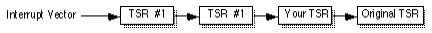
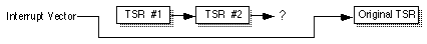

|
Table of Content | Chapter Eighteen
(Part 5) |
|
Table of Content | Chapter Eighteen
(Part 5) |
| CHAPTER EIGHTEEN: RESIDENT PROGRAMS (Part 4) |
| 18.5 -
Installing a TSR 18.6 - Removing a TSR 18.7 - Other DOS Related Issues |
Although we've already discussed how to make a program go resident, there are a few aspects to installing a TSR that we need to address. First, what happens if a user installs a TSR and then tries to install it a second time without first removing the one that is already resident? Second, how can we assign a TSR identification number that won't conflict with a TSR that is already installed? This section will address these issues.
The first problem to address is an attempt to reinstall a TSR program. Although one could imagine a type of TSR that allows multiple copies of itself in memory at one time, such TSRs are few and far in-between. In most cases, having multiple copies of a TSR in memory will, at best, waste memory and, at worst, crash the system. Therefore, unless you are specifically written a TSR that allows multiple copies of itself in memory at one time, you should check to see if the TSR is installed before actually installing it. This code is identical to the code an application would use to see if the TSR is installed, the only difference is that the TSR should print a nasty message and refuse to go TSR if it finds a copy of itself already installed in memory. The following code does this:
mov cx, 0FFh
SearchLoop: mov ah, cl
push cx
mov al, 0
int 2Fh
pop cx
cmp al, 0
je TryNext
strcmpl
byte "Randy's INT "
byte "10h Extension",0
je AlreadyThere
TryNext: loop SearchLoop
jmp NotInstalled
AlreadyThere: print
byte "A copy of this TSR already exists in memory",cr,lf
byte "Aborting installation process.",cr,lf,0
ExitPgm
.
.
.
In the previous section, you saw how to write some code that would allow an application to determine the TSR ID of a specific resident program. Now we need to look at how to dynamically choose an identification number for the TSR, one that does not conflict with any other TSRs. This is yet another modification to the scanning loop. In fact, we can modify the code above to do this for us. All we need to do is save away some ID value that does not does not have an installed TSR. We need only add a few lines to the above code to accomplish this:
mov FuncID, 0 ;Initialize FuncID to zero.
mov cx, 0FFh
SearchLoop: mov ah, cl
push cx
mov al, 0
int 2Fh
pop cx
cmp al, 0
je TryNext
strcmpl
byte "Randy's INT "
byte "10h Extension",0
je AlreadyThere
loop SearchLoop
jmp NotInstalled
; Note: presumably DS points at the resident data segment that contains
; the FuncID variable. Otherwise you must modify the following to
; point some segment register at the segment containing FuncID and
; use the appropriate segment override on FuncID.
TryNext: mov FuncID, cl ;Save possible function ID if this
loop SearchLoop ; identifier is not in use.
jmp NotInstalled
AlreadyThere: print
byte "A copy of this TSR already exists in memory",cr,lf
byte "Aborting installation process.",cr,lf,0
ExitPgm
NotInstalled: cmp FuncID, 0 ;If there are no available IDs, this
jne GoodID ; will still contain zero.
print
byte "There are too many TSRs already installed.",cr,lf
byte "Sorry, aborting installation process.",cr,lf,0
ExitPgm
GoodID:
If this code gets to label "GoodID"
then a previous copy of the TSR is not present in memory and the FuncID
variable contains an unused function identifier.
Of course, when you install your TSR in this manner, you must not forget to patch your interrupt 2Fh handler into the int 2Fh chain. Also, you have to write an interrupt 2Fh handler to process int 2Fh calls. The following is a very simple multiplex interrupt handler for the code we've been developing:
FuncID byte 0 ;Should be in resident segment.
OldInt2F dword ? ; Ditto.
MyInt2F proc far
cmp ah, cs:FuncID ;Is this call for us?
je ItsUs
jmp cs:OldInt2F ;Chain to previous guy, if not.
; Now decode the function value in AL:
ItsUs: cmp al, 0 ;Verify presence call?
jne TryOtherFunc
mov al, 0FFh ;Return "present" value in AL.
lesi IDString ;Return pointer to string in es:di.
iret ;Return to caller.
IDString byte ""Randy's INT "
byte "10h Extension",0
; Down here, handle other multiplex requests.
; This code doesn't offer any, but here's where they would go.
; Just test the value in AL to determine which function to execute.
TryOtherFunc:
.
.
.
iret
MyInt2F endp
Removing a TSR is quite a bit more difficult that installing one. There are three things the removal code must do in order to properly remove a TSR from memory: first, it needs to stop any pending activities (e.g., the TSR may have some flags set to start some activity at a future time); second it needs to restore all interrupt vectors to their former values; third, it needs to return all reserved memory back to DOS so other applications can make use of it. The primary difficulty with these three activities is that it is not always possible to properly restore the interrupt vectors.
If your TSR removal code simply restores the old interrupt vector values, you may create a really big problem. What happens if the user runs some other TSRs after running yours and they patch into the same interrupt vectors as your TSR? This would produce interrupt chains that look something like the following:

If you restore the interrupt vector with your original value, you will create the following:

This effectively disables the TSRs that chain into your code. Worse yet, this only disables the interrupts that those TSRs have in common with your TSR. the other interrupts those TSRs patch into are still active. Who knows how those interrupts will behave under such circumstances?
One solution is to simply print an error message informing the user that they cannot remove this TSR until they remove all TSRs installed prior to this one. This is a common problem with TSRs and most DOS users who install and remove TSRs should be comfortable with the fact that they must remove TSRs in the reverse order that they install them.
It would be tempting to suggest a new convention that TSRs
should obey; perhaps if the function number is 0FFh, a TSR should store the value in
es:bx away in the interrupt vector specified in cl. This would allow a
TSR that would like to remove itself to pass the address of its original interrupt handler
to the previous TSR in the chain. There are only three problems with this approach: first,
almost no TSRs in existence currently support this feature, so it would be of little
value; second, some TSRs might use function 0FFh for something else, calling them with
this value, even if you knew their ID number, could create a problem; finally, just
because you've removed the TSR from the interrupt chain doesn't mean you can (truly) free
up the memory the TSR uses. DOS' memory management scheme (the free pointer business)
works like a stack. If there are other TSRs installed above yours in memory, most
applications wouldn't be able to use the memory freed up by removing your TSR anyway.
Therefore, we'll also adopt the strategy of simply informing the user that they cannot remove a TSR if there are others installed in shared interrupt chains. Of course, that does bring up a good question, how can we determine if there are other TSRs chained in to our interrupts? Well, this isn't so hard. We know that the 80x86's interrupt vectors should still be pointing at our routines if we're the last TSR run. So all we've got to do is compare the patched interrupt vectors against the addresses of our interrupt service routines. If they all match, then we can safely remove our TSR from memory. If only one of them does not match, then we cannot remove the TSR from memory. The following code sequence tests to see if it is okay to detach a TSR containing ISRs for int 2fH and int 9:
; OkayToRmv- This routine returns the carry flag set if it is okay to
; remove the current TSR from memory. It checks the interrupt
; vectors for int 2F and int 9 to make sure they
; are still pointing at our local routines.
; This code assumes DS is pointing at the resident code's
; data segment.
OkayToRmv proc near
push es
mov ax, 0 ;Point ES at interrupt vector
mov es, ax ; table.
mov ax, word ptr OldInt2F
cmp ax, es:[2fh*4]
jne CantRemove
mov ax, word ptr OldInt2F+2
cmp ax, es:[2Fh*4 + 2]
jne CantRemove
mov ax, word ptr OldInt9
cmp ax, es:[9*4]
jne CantRemove
mov ax, word ptr OldInt9+2
cmp ax, es:[9*4 + 2]
jne CantRemove
; We can safely remove this TSR from memory.
stc
pop es
ret
' Someone else is in the way, we cannot remove this TSR.
CantRemove: clc
pop es
ret
OkayToRmv endp
Before the TSR attempts to remove itself, it should call a routine like this one to see if removal is possible.
Of course, the fact that no other TSR has chained into the same interrupts does not guarantee that there are not TSRs above yours in memory. However, removing the TSR in that case will not crash the system. True, you may not be able to reclaim the memory the TSR is using (at least until you remove the other TSRs), but at least the removal will not create complications.
To remove the TSR from memory requires two DOS calls, one
to free the memory in use by the TSR and one to free the memory in use by the environment
area assigned to the TSR. To do this, you need to make the DOS deallocation call . This
call requires that you pass the segment address of the block to release in the es
register. For the TSR program itself, you need to pass the address of the TSR's PSP. This
is one of the reasons a TSR needs to save its PSP when it first installs itself. The other
free call you must make frees the space associated with the TSR's environment block. The
address of this block is at offset 2Ch in the PSP. So we should probably free it first.
The following calls handle the job of free the memory associated with a TSR:
; Presumably, the PSP variable was initialized with the address of this
; program's PSP before the terminate and stay resident call.
mov es, PSP
mov es, es:[2Ch] ;Get address of environment block.
mov ah, 49h ;DOS deallocate block call.
int 21h
mov es, PSP ;Now free the program's memory
mov ah, 49h ; space.
int 21h
Some poorly-written TSRs provide no facilities to allow you to remove them from memory. If someone wants remove such a TSR, they will have to reboot the PC. Obviously, this is a poor design. Any TSR you design for anything other than a quick test should be capable of removing itself from memory. The multiplex interrupt with function number one is often used for this purpose. To remove a TSR from memory, some application program passes the TSR ID and a function number of one to the TSR. If the TSR can remove itself from memory, it does so and returns a value denoting success. If the TSR cannot remove itself from memory, it returns some sort of error condition.
Generally, the removal program is the TSR itself with a special parameter that tells it to remove the TSR currently loaded into memory. A little later this chapter presents an example of a TSR that works precisely in this fashion.
In addition to reentrancy problems with DOS, there are a few other issues your TSRs must deal with if they are going to make DOS calls. Although your calls might not cause DOS to reenter itself, it is quite possible for your TSR's DOS calls to disturb data structures in use by an executing application. These data structures include the application's stack, PSP, disk transfer area (DTA), and the DOS extended error information record.
When an active or passive TSR gains control of the CPU, it
is operating in the environment of the main (foreground) application. For example, the
TSR's return address and any values it saves on the stack are pushed onto the
application's stack. If the TSR does not use much stack space, this is fine, it need not
switch stacks. However, if the TSR consumes considerable amounts of stack space because of
recursive calls or the allocation of local variables, the TSR should save the
application's ss and sp values and switch to a local stack.
Before returning, of course, the TSR should switch back to the foreground application's
stack.
Likewise, if the TSR execute's DOS' get psp address call,
DOS returns the address of the foreground application's PSP, not the TSR's PSP. The PSP
contains several important address that DOS uses in the event of an error. For example,
the PSP contains the address of the termination handler, ctrl-break handler, and critical
error handler. If you do not switch the PSP from the foreground application to the TSR's
and one of the exceptions occurs (e.g., someone hits control-break or a disk error
occurs), the handler associated with the application may take over. Therefore, when making
DOS calls that can result in one of these conditions, you need to switch PSPs. Likewise,
when your TSR returns control to the foreground application, it must restore the PSP
value. MS-DOS provides two functions that get and set the current PSP address. The DOS Set
PSP call (ah=51h) sets the current program's PSP address to the value in the bx
register. The DOS Get PSP call (ah=50h) returns the current program's PSP address in the bx
register. Assuming the transient portion of your TSR has saved it's PSP address in the
variable PSP, you switch between the TSR's PSP and the foreground
application's PSP as follows:
; Assume we've just entered the TSR code, determined that it's okay to
; call DOS, and we've switch DS so that it points at our local variables.
mov ah, 51h ;Get application's PSP address
int 21h
mov AppPSP, bx ;Save application's PSP locally.
mov bx, PSP ;Change system PSP to TSR's PSP.
mov ah, 50h ;Set PSP call
int 21h
.
. ;TSR code
.
mov bx, AppPSP ;Restore system PSP address to
mov ah, 50h ; point at application's PSP.
int 21h
<< clean up and return from TSR »
Another global data structure that DOS uses is the disk
transfer area. This buffer area was used extensively for disk I/O in DOS version 1.0.
Since then, the main use for the DTA has been the find first file and find next file
functions. Obviously, if the application is in the middle of using data in the DTA and
your TSR makes a DOS call that changes the data in the DTA, you will affect the operation
of the foreground process. MS-DOS provides two calls that let you get and set the address
of the DTA. The Get DTA Address call, with ah=2Fh, returns the address of the
DTA in the es:bx registers. The Set DTA call (ah=1Ah) sets the
DTA to the value found in the ds:dx register pair. With these two calls you
can save and restore the DTA as we did for the PSP address above. The DTA is usually at
offset 80h in the PSP, the following code preserve's the foreground application's DTA and
sets the current DTA to the TSR's at offset PSP:80.
; This code makes the same assumptions as the previous example.
mov ah, 2Fh ;Get application DTA
int 21h
mov word ptr AppDTA, bx
mov word ptr AppDTA+2, es
push ds
mov ds, PSP ;DTA is in PSP
mov dx, 80h ; at offset 80h
mov ah, 1ah ;Set DTA call.
int 21h
pop ds
.
. ;TSR code.
.
push ds
mov dx, word ptr AppDTA
mov ds, word ptr AppDTA+2
mov ax, 1ah ;Set DTA call.
int 21h
The last issue a TSR must deal with is the extended error information in DOS. If a TSR interrupts a program immediately after DOS returns to that program, there may be some error information the foreground application needs to check in the DOS extended error information. If the TSR makes any DOS calls, DOS may replace this information with the status of the TSR DOS call. When control returns to the foreground application, it may read the extended error status and get the information generated by the TSR DOS call, not the application's DOS call. DOS provides two asymmetrical calls, Get Extended Error and Set Extended Error that read and write these values, respectively. The call to Get Extended Error returns the error status in the ax, bx, cx, dx, si, di, es, and ds registers. You need to save the registers in a data structure that takes the following form:
ExtError struct
eeAX word ?
eeBX word ?
eeCX word ?
eeDX word ?
eeSI word ?
eeDI word ?
eeDS word ?
eeES word ?
word 3 dup (0) ;Reserved.
ExtError ends
The Set Extended Error call requires that you pass an address to this structure in the ds:si register pair (which is why these two calls are asymmetrical). To preserve the extended error information, you would use code similar to the following:
; Same assumptions as the above routines here. Also, assume the error
; data structure is named ERR and is in the same segment as this code.
push ds ;Save ptr to our DS.
mov ah, 59h ;Get extended error call
mov bx, 0 ;Required by this call
int 21h
mov cs:ERR.eeDS, ds
pop ds ;Retrieve ptr to our data.
mov ERR.eeAX, ax
mov ERR.eeBX, bx
mov ERR.eeCX, cx
mov ERR.eeDX, dx
mov ERR.eeSI, si
mov ERR.eeDI, di
mov ERR.eeES, es
.
. ;TSR code goes here.
.
mov si, offset ERR ;DS already points at correct seg.
mov ax, 5D0Ah ;5D0Ah is Set Extended Error code.
int 21h
<< clean up and quit »
|
Table of Content | Chapter Eighteen
(Part 5) |
Chapter Eighteen: Resident Programs
(Part 4)
29 SEP 1996